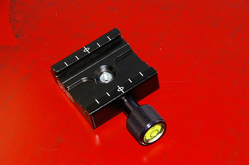
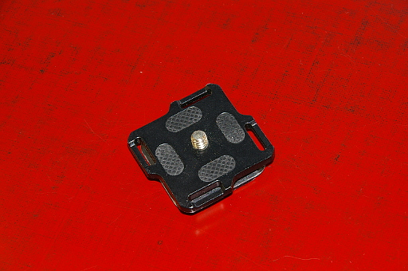
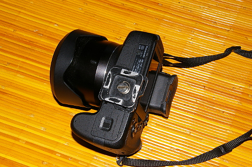
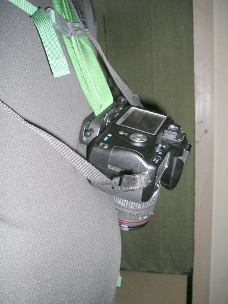
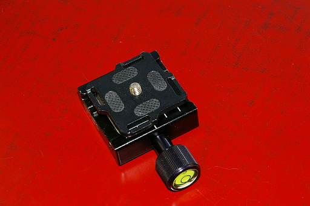
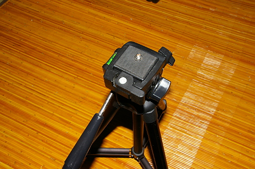
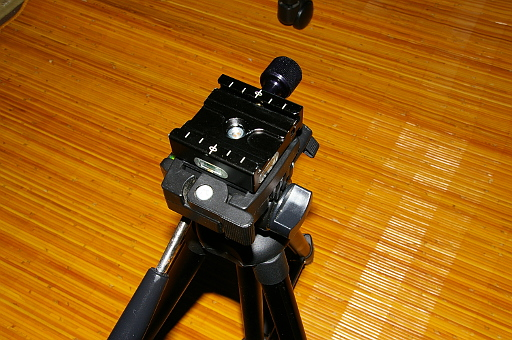
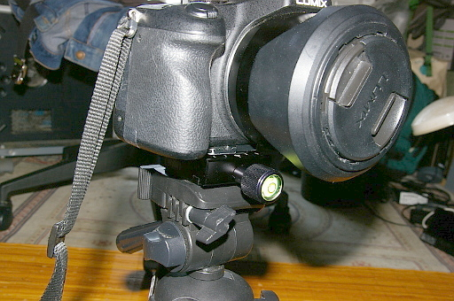
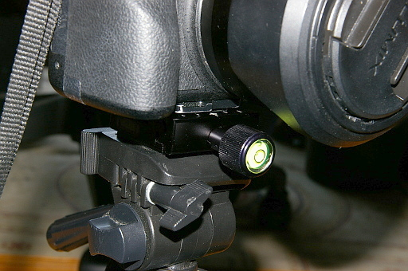
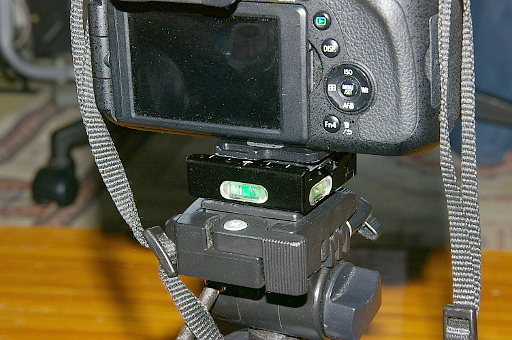

ただし国土地理院の地図などコンテンツの一部は除きます。
ただし国土地理院の地図などコンテンツの一部は除きます。先日 INPON という中国メーカーのアルカスイス互換クランプを購入しました。

これが何をするのもか順をおって説明していきますね。
さて先日このサイトでピークデザインのキャプチャの後発中国製コピー品 Another Dimension というブランドのカメラキャプチャクリップを購入したと報告させていただきました。
Another Diminsion のクリップには下の写真のクイックリリースプレートが付属していると書きました。

このプレートを下の写真のようにカメラに取り付けることで

下の写真のようにキャプチャクリップに取り付けて、ザックのショルダーハーネス等にカメラを固定できるのでした。

以前の記事ではこのキャプチャクリップ用のプレートはアルカスイス互換だと書きました。それはまったくその通りで今回取り上げているアルカスイス互換クランプに下の写真のように取り付けて固定することができます。

これが何が嬉しいのかと言うと、世の中には下の写真のようにアルカスイス非互換のメーカー独自のクイックシューがついた、あるいはクイックシューすらついていない三脚が溢れています。

そういった三脚の雲台に下の写真のようにこの製品を取り付けてやることで、たちまちその三脚をアルカスイス互換の三脚に変身させてやることができるのです。

それでは三脚をアルカスイス互換にすると何が嬉しいのでしょうか。ここで思い出してください。ピークデザインのキャプチャのプレートも、後発中国製コピー品 Another Dimension というブランドのカメラキャプチャクリップのプレートもアルカスイス互換だと書きました。つまり下の写真のようにキャプチャクリップに取り付けているカメラを
プレートを交換することなく下の写真のように三脚に取り付けることができるのです。楽じゃありませんか？プレートをいちいち交換しなくていいんです。プレートの交換というものは決しては楽な作業ではありません。どちらかというと面倒な作業です。これはいいと思いませんか？

しかもこのクランプには下の写真のように水準器が 3 つ搭載されています。水準器がない三脚であってもこれで水平がとれます。


いいと思いませんか？しかも amazon での価格が 2018 年 8 月 31 日現在 1180 円です。安い！！
INPON という中国メーカーのアルカスイス互換クランプお勧めします。
実は三脚をアルカスイス互換にするともうひとつ嬉しいことがあるのですが、それについては次回の記事で書きたいと思います。
ただし国土地理院の地図などコンテンツの一部は除きます。